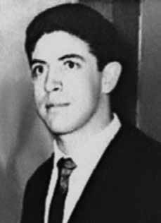

Antônio
Joaquim
de Souza
Machado
CIRCUNSTÂNCIAS DA MORTE
Antônio Joaquim de Souza Machado foi visto pela última vez no dia 15 de fevereiro de 1971. Seu desaparecimento está relacionado com o desaparecimento de Carlos Alberto Soares de Freitas, no mesmo dia.
Em interrogatório prestado à 2ª Auditoria do Exército, no dia 14 de novembro de 1972, Maria Clara Abrantes Pego, que esteve presa na Polícia do Exército (PE) e se constituiu como importante testemunha do desaparecimento de Antônio Joaquim, Carlos Alberto Freitas e Sergio Emanuel Campos, o único que foi encontrado com vida, afirmou que Antônio Joaquim Machado foi “preso em 15 de fevereiro de 1971 no Rio de Janeiro, em Ipanema, nas proximidades da Rua Joana Angélica” e que “foi possivelmente assassinado sob tortura na PE”; afirmou ainda que “sabe que o mesmo foi preso nessa data, porque juntamente com ele foram presos Carlos Alberto Soares de Freitas e Emanoel Paiva, e desde essa data […] continuam desaparecidos, esgotados todos os recursos legais para encontrá-los”.
Foi impetrado o habeas corpus nº 30.405, no Superior Tribunal Militar (STM), no dia 27 de maio de 1971, com o objetivo de buscar informações sobre Antônio Joaquim, Carlos Alberto e Emanuel. O relator do processo foi o ministro Nelson Sampaio. O delegado do Departamento de Ordem Política e Social (DOPS) do antigo Estado da Guanabara, Gastão Fernandes Barbosa, dizia que Antônio e Carlos jamais estiveram presos ou detidos naquele departamento. A última notícia que os pais de Antônio Joaquim Machado tiveram do filho foi em setembro de 1972, pelo general Elcino Lopes Bragança, de que ele estava preso nas dependências do Exército, no Rio de Janeiro.
De acordo com declarações de Sérgio Emanuel Dias Campos, na noite do dia 14 de fevereiro de 1971, por volta das 20h da noite, junto a Rosalina Santa Cruz e seu companheiro, encontrou-se com Antônio Joaquim Machado, no bar Chaplin, em Ipanema, próximo à rua Farme de Amoedo. Na ocasião, percebeu que Antônio encontrava-se tenso, ao que admitiu a Sérgio que estava se sentindo ameaçado, mas não contou as razões por questões de segurança. Foi a última vez em que esteve com Antônio Joaquim. Sérgio Emanuel conta ainda que, na manhã do dia 15 de fevereiro de 1971, por volta das 9 horas, encontrou-se com Carlos Alberto, na rua Farme de Amoedo, nº 135, Ipanema, onde ele havia alugado um pequeno apartamento. Nesse encontro, Carlos Alberto revelou a Sérgio que Antônio Joaquim de Souza Machado, por estar sem lugar para ficar, havia dormido na noite anterior (14 para 15 de fevereiro) no local.
Após o não comparecimento de Carlos Alberto e de Antônio Joaquim a um encontro no dia 15 de fevereiro, Sérgio decidiu ir ao apartamento na rua Farme de Amoedo, conforme orientação dada por Carlos Alberto, para destruir as anotações sobre os contatos da VAR- Palmares que escondera no local. Quando Sérgio chegou ao apartamento, por volta das 22h da noite daquele mesmo dia, o local já se encontrava ocupado por elementos do Destacamento de Operações de Informações do Centro de Operações de Defesa Interna (DOI-CODI) do Rio de Janeiro, que prenderam Sérgio e levaram-no para suas dependências, onde foi torturado. Na ocasião de seu desaparecimento, Antônio Joaquim estava, portanto, hospedado na mesma pensão que Carlos Alberto Soares de Freitas, na rua Farme de Amoedo, nº 135, Ipanema.
No último dia em que foi visto, 15 de fevereiro de 1971, havia marcado dois encontros para aquela noite: um primeiro, onde também compareceria Carlos Alberto Soares de Freitas, às 18h em frente ao Cinema Ópera; e um segundo, com dois companheiros por volta de 20 ou 21h, em frente ao bar Chaplin, em Ipanema. No entanto, Antônio Joaquim não compareceu a ambos. Segundo diversos depoimentos, Antônio Joaquim de Souza Machado foi torturado na Casa da Morte de Petrópolis, centro clandestino de execução e tortura, subordinado ao Centro de Informações do Exército (CIE) e que mantinha ligações com o DOI-CODI do Rio de Janeiro.
De acordo com o relatório preliminar de pesquisa sobre a Casa da Morte de Petrópolis produzido pela Comissão Nacional da Verdade, com base em testemunho prestado por Inês Etienne Romeu ao Conselho Federal da Ordem dos Advogados do Brasil em 5 de setembro de 1979, a passagem de Antônio Joaquim pela Casa da Morte foi confirmada pelo depoimento de Inês Etienne e pela Informação 4.057/16, de 11 de setembro de 1975, da Agência de São Paulo do SNI, que registra a data de 12 de abril de 1971 para a morte de Antônio Joaquim.
De acordo com as pesquisas desenvolvidas pela CNV, é possível inferir a participação do capitão José Brandt Teixeira, membro do CIE, nas investigações que culminaram nos sequestros de Antônio Joaquim e Carlos Alberto, junto à prisão de Sérgio Emanuel. Tal operação para a prisão dos três tinha como objetivo o desmantelamento de uma organização montada com o objetivo de operacionalizar a volta dos banidos, com Antônio Joaquim e Carlos Alberto, diretamente ligados ao esquema. Essa informação corrobora a suposição de que os dois desaparecidos foram levados à Casa da Morte, montada em Petrópolis pelo CIE. Seu corpo nunca foi encontrado.
Antônio Joaquim de Souza Machado was last seen on February 15, 1971. His disappearance is related to the disappearance of Carlos Alberto Soares de Freitas, on the same day.
In an interrogation given to the 2nd Army Audit, on November 14, 1972, Maria Clara Abrantes Pego, who was imprisoned at the Army Police (PE) and was an important witness to the disappearance of Antônio Joaquim, Carlos Alberto Freitas and Sergio Emanuel Campos, the only one who was found alive, stated that Antônio Joaquim Machado was “arrested on February 15, 1971 in Rio de Janeiro, in Ipanema, in the near Rua Joana Angélica” and that “he was possibly murdered under torture in PE”; He also stated that “you know that he was arrested on that date, because Carlos Alberto Soares de Freitas and Emanoel Paiva were arrested along with him, and since that date [...] they remain missing, all legal resources to find them having been exhausted”.
Habeas corpus nº 30,405 was filed at the Superior Military Court (STM), on May 27, 1971, with the aim of seeking information about Antônio Joaquim, Carlos Alberto and Emanuel. The rapporteur of the process was minister Nelson Sampaio. The delegate from the Department of Political and Social Order (DOPS) of the former State of Guanabara, Gastão Fernandes Barbosa, said that Antônio and Carlos were never arrested or detained in that department. The last news that Antônio Joaquim Machado's parents had about their son was in September 1972, by General Elcino Lopes Bragança, that he was imprisoned in the Army's facilities, in Rio de Janeiro.
According to statements by Sérgio Emanuel Dias Campos, on the night of February 14, 1971, around 8pm, together with Rosalina Santa Cruz and her companion, he met with Antônio Joaquim Machado, at the Chaplin bar, in Ipanema, close to Rua Farme de Amoedo. At the time, he noticed that Antônio was tense, and he admitted to Sérgio that he was feeling threatened, but did not explain the reasons for security reasons. It was the last time he was with Antônio Joaquim. Sérgio Emanuel also says that, on the morning of February 15, 1971, around 9 am, he met Carlos Alberto, at Rua Farme de Amoedo, nº 135, Ipanema, where he had rented a small apartment. At this meeting, Carlos Alberto revealed to Sérgio that Antônio Joaquim de Souza Machado, having no place to stay, had slept the night before (February 14th to 15th) there.
After Carlos Alberto and Antônio Joaquim failed to attend a meeting on February 15, Sérgio decided to go to the apartment on Rua Farme de Amoedo, as instructed by Carlos Alberto, to destroy the notes on the VAR-Palmares contacts that he had hidden there. When Sérgio arrived at the apartment, around 10pm that same day, the place was already occupied by members of the Information Operations Detachment of the Internal Defense Operations Center (DOI-CODI) in Rio de Janeiro, who arrested Sérgio and took him to their premises, where he was tortured. At the time of his disappearance, Antônio Joaquim was, therefore, staying in the same guesthouse as Carlos Alberto Soares de Freitas, on Rua Farme de Amoedo, nº 135, Ipanema.
On the last day he was seen, February 15, 1971, he had scheduled two meetings for that night: a first, where Carlos Alberto Soares de Freitas would also attend, at 6pm in front of Cinema Ópera; and a second, with two companions at around 8 or 9 pm, in front of the Chaplin bar, in Ipanema. However, Antônio Joaquim did not attend both. According to several testimonies, Antônio Joaquim de Souza Machado was tortured at the House of Death in Petrópolis, a clandestine execution and torture center, subordinate to the Army Information Center (CIE) and which maintained links with DOI-CODI in Rio de Janeiro.
According to the preliminary research report on the House of Death in Petrópolis produced by the National Truth Commission, based on testimony given by Inês Etienne Romeu to the Federal Council of the Brazilian Bar Association on September 5, 1979, Antônio Joaquim's passage through the House of Death was confirmed by the testimony of Inês Etienne and by Information 4.057/16, dated September 11, 1975, from the São Paulo Agency of the SNI, which records the date of April 12, 1971 for the death of Antônio Joaquim.
According to research carried out by the CNV, it is possible to infer the participation of captain José Brandt Teixeira, a member of the CIE, in the investigations that culminated in the kidnappings of Antônio Joaquim and Carlos Alberto, together with the arrest of Sérgio Emanuel. This operation to arrest the three had the objective of dismantling an organization set up with the aim of operationalizing the return of the banished, with Antônio Joaquim and Carlos Alberto, directly linked to the scheme. This information corroborates the assumption that the two missing people were taken to the House of Death, set up in Petrópolis by the CIE. His body was never found.
Antônio Joaquim de Souza Machado fue visto por última vez el 15 de febrero de 1971. Su desaparición está relacionada con la desaparición de Carlos Alberto Soares de Freitas, el mismo día.
En un interrogatorio realizado ante la Segunda Auditoría del Ejército, el 14 de noviembre de 1972, Maria Clara Abrantes Pego, quien se encontraba detenida en la Policía Militar (PE) y fue testigo importante de la desaparición de Antônio Joaquim, Carlos Alberto Freitas y Sergio Emanuel Campos, el único encontrado con vida, afirmó que Antônio Joaquim Machado fue “detenido el 15 de febrero de 1971 en Río de Janeiro, en Ipanema, en la cercana Rua Joana Angélica” y que “posiblemente fue asesinado bajo tortura en PE”; Asimismo, afirmó que “ustedes saben que fue detenido en esa fecha, porque junto con él fueron detenidos Carlos Alberto Soares de Freitas y Emanoel Paiva, y desde esa fecha [...] permanecen desaparecidos, agotados todos los recursos legales para encontrarlos”.
El hábeas corpus nº 30.405 fue interpuesto ante el Tribunal Superior Militar (STM), el 27 de mayo de 1971, con el objetivo de solicitar información sobre Antônio Joaquim, Carlos Alberto y Emanuel. El relator del proceso fue el ministro Nelson Sampaio. El delegado del Departamento de Orden Político y Social (DOPS) del ex estado de Guanabara, Gastão Fernandes Barbosa, afirmó que Antônio y Carlos nunca fueron detenidos ni detenidos en ese departamento. La última noticia que los padres de Antônio Joaquim Machado tuvieron sobre su hijo fue en septiembre de 1972, por medio del general Elcino Lopes Bragança, que estaba recluido en instalaciones del Ejército, en Río de Janeiro.
Según declaraciones de Sérgio Emanuel Dias Campos, la noche del 14 de febrero de 1971, alrededor de las 20 horas, junto con Rosalina Santa Cruz y su acompañante, se reunió con Antônio Joaquim Machado, en el bar Chaplin, en Ipanema, cerca de la Rua Farme de Amoedo. En ese momento, notó que Antônio estaba tenso y le confesó a Sérgio que se sentía amenazado, pero no explicó los motivos por razones de seguridad. Fue la última vez que estuvo con Antônio Joaquim. Sérgio Emanuel cuenta también que, en la mañana del 15 de febrero de 1971, alrededor de las 9 de la mañana, conoció a Carlos Alberto, en la Rua Farme de Amoedo, nº 135, Ipanema, donde había alquilado un pequeño apartamento. En esta reunión, Carlos Alberto le reveló a Sérgio que Antônio Joaquim de Souza Machado, al no tener dónde quedarse, había dormido allí la noche anterior (del 14 al 15 de febrero).
Después de que Carlos Alberto y Antônio Joaquim no asistieran a una reunión el 15 de febrero, Sérgio decidió ir al apartamento de la Rua Farme de Amoedo, siguiendo las instrucciones de Carlos Alberto, para destruir las notas de los contactos VAR-Palmares que había escondido allí. Cuando Sérgio llegó al apartamento, alrededor de las 22 horas de ese mismo día, el lugar ya estaba ocupado por miembros del Destacamento de Operaciones de Información del Centro de Operaciones de Defensa Interna (DOI-CODI) de Río de Janeiro, quienes detuvieron a Sérgio y lo llevaron a sus instalaciones, donde fue torturado. Por lo tanto, en el momento de su desaparición, Antônio Joaquim se alojaba en la misma casa de huéspedes que Carlos Alberto Soares de Freitas, en la Rua Farme de Amoedo, nº 135, Ipanema.
El último día que lo vieron, el 15 de febrero de 1971, tenía programados dos encuentros para esa noche: un primero, al que también asistiría Carlos Alberto Soares de Freitas, a las 18, frente al Cine Ópera; y un segundo, con dos acompañantes sobre las 20 o 21 horas, frente al bar Chaplin, en Ipanema. Sin embargo, Antônio Joaquim no asistió a ambas. Según varios testimonios, Antônio Joaquim de Souza Machado fue torturado en la Casa de la Muerte de Petrópolis, un centro clandestino de ejecución y tortura, subordinado al Centro de Información del Ejército (CIE) y que mantenía vínculos con el DOI-CODI de Río de Janeiro.
Según el informe preliminar de investigación sobre la Casa de la Muerte de Petrópolis elaborado por la Comisión Nacional de la Verdad, con base en el testimonio de Inês Etienne Romeu ante el Consejo Federal del Colegio de Abogados de Brasil el 5 de septiembre de 1979, el paso de Antônio Joaquim por la Casa de la Muerte fue confirmado por el testimonio de Inês Etienne y por la Información 4.057/16, de 11 de septiembre de 1975, de la Agencia São Paulo del SNI, que registra la fecha del 12 de abril de 1971 por la muerte de Antônio Joaquim.
Según investigaciones realizadas por la CNV, es posible inferir la participación del capitán José Brandt Teixeira, miembro del CIE, en las investigaciones que culminaron con los secuestros de Antônio Joaquim y Carlos Alberto, junto con la detención de Sérgio Emanuel. Esta operación de detención de los tres tenía como objetivo desmantelar una organización creada con el objetivo de operacionalizar el regreso de los desterrados, con Antônio Joaquim y Carlos Alberto, directamente vinculados al plan. Esta información corrobora la suposición de que los dos desaparecidos fueron trasladados a la Casa de la Muerte, instalada en Petrópolis por el CIE. Su cuerpo nunca fue encontrado.